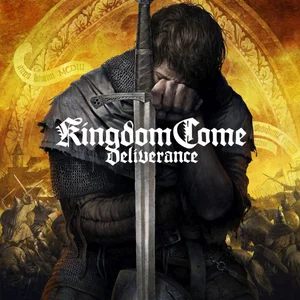
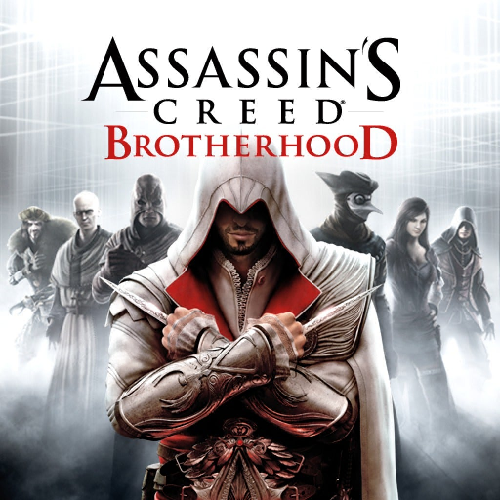

Games I Like

Kingdom Come Deliverance
With its great storytelling, KCD offers a lot of content that I still play to this day.
Kingdom Come Deliverance is a realistic RPG set in medieval Bohemia, offering deep mechanics and an immersive world.

Assassin's Creed: Brotherhood
This is great it shows how a granmaster assassin should act and the combat is really great.
Assassin's Creed: Brotherhood is a 2010 action-adventure game developed by Ubisoft Montreal and published by Ubisoft.[1][2] It is the third major installment in the Assassin's Creed series, and the second chapter in the "Ezio Trilogy", as a direct sequel to 2009's Assassin's Creed II. The plot is set in a fictional history of real-world events and follows the millennia-old struggle between the Assassins, who fight to preserve peace and free will, and the Templars, who desire peace through control. The framing story is set in the 21st century and features series protagonist Desmond Miles who, using a machine known as the Animus, relives the memories of his Assassin ancestor, Ezio Auditore da Firenze, to find a way to avert the 2012 apocalypse. The main story takes place during the Italian Wars, spanning the years 1500–1507, and continues from the events of Assassin's Creed II, as Ezio takes the fight against the Templars (led by the powerful Borgia family) to Rome, where he attempts to rebuild the Assassin Brotherhood in Italy and liberate the city from the Borgias' control.

Far Cry 3
This game was really good because of its great villain but it was cut short as it have a really short story line.
Far Cry 3 is a 2012 first-person shooter game developed by Ubisoft Montreal and published by Ubisoft. It is the third main installment in the Far Cry series after Far Cry 2. The game takes place on the fictional Rook Islands, a tropical archipelago which can be freely explored by players. Gameplay focuses on combat and exploration. Players can use a variety of weapons to defeat human enemies and hostile wildlife, and the game features elements found in role-playing games such as skill trees and experience. After a vacation goes awry, protagonist Jason Brody must save his friends, who have been kidnapped by pirates, and escape from the island and its unhinged inhabitants.